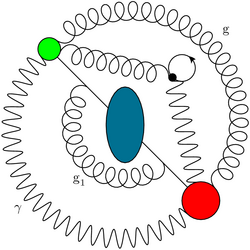

pyfeyn is a Python-language based system for drawing Feynman diagrams. It was inspired by the C++ FeynDiagram system, and aims to provide the same functionality and quality of output as that, with the added benefits of a modern interpreted language, an improved interface and output direct to both EPS and PDF. pyfeyn (pronounced like "python" if you can's say "th"s properly...) is written as an object oriented wrapper on the excellent PyX system.
pyfeyn is currently in pre-release status: you can currently draw lines, vertices, interaction blobs and do some semi-clever stuff with gluons and specifying points that lines should arc through. Work is still needed to clean up the class structure, be better at joining blobs with lines and to implement line deformers for gluons and vector particles. Line arrows, labels (via PyX text objects) and scalar/gluon lines are currently possible but need cleaned up.
Contact me if you want to look at a pre-release version of pyfeyn (and especially if you want to contribute ideas or code!)
Here's some sample output from pyfeyn. The following source code:
produces (click to enlarge):
These things should happen before a public release:
And these can happen afterwards:
pyfeyn is managed by Andy Buckley
{kind=link}